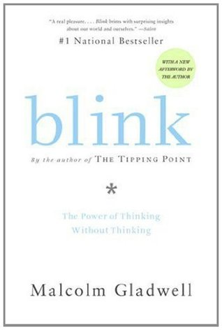

Blink: The Power of Thinking Without Thinking
Malcolm Gladwell, Barry Fox, Irina Henegar (Translator)
My rating: 3.95/5
Wonderful read this is! Fast paced,intriguing and spell binding at times! I loved the progressively advancing narrative substantiated by a variety of case studies and the clear-headed line of reasoning. This book is a brilliant aggregate of human behavior, how rapid cognition influences snap decisions and how good decisions with a high statistical precision can be arrived through thin-slicing cases. Amazed me.